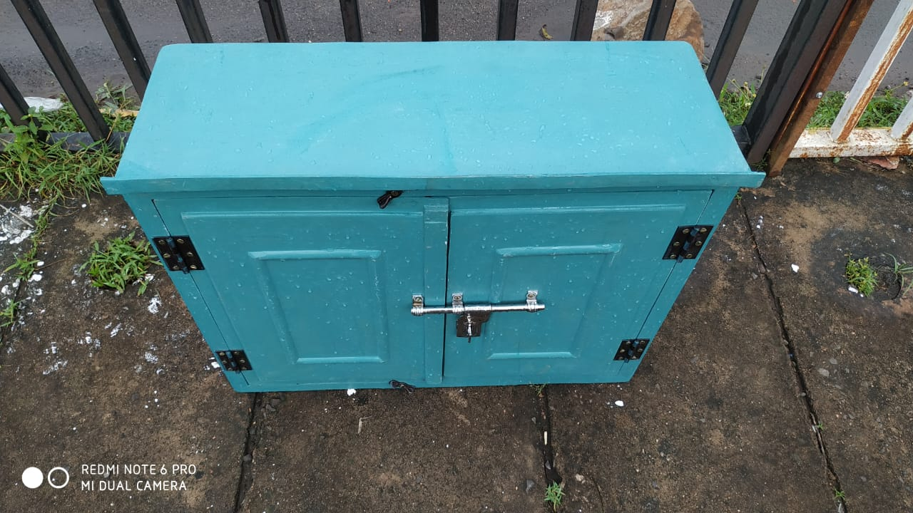
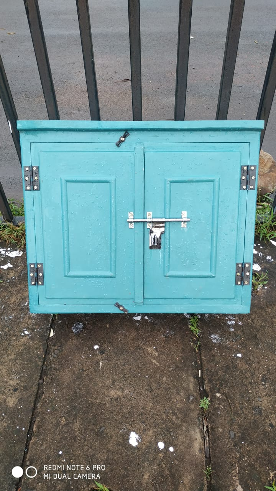
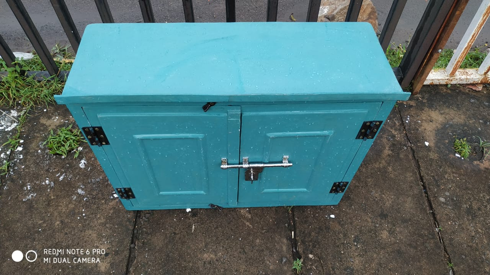
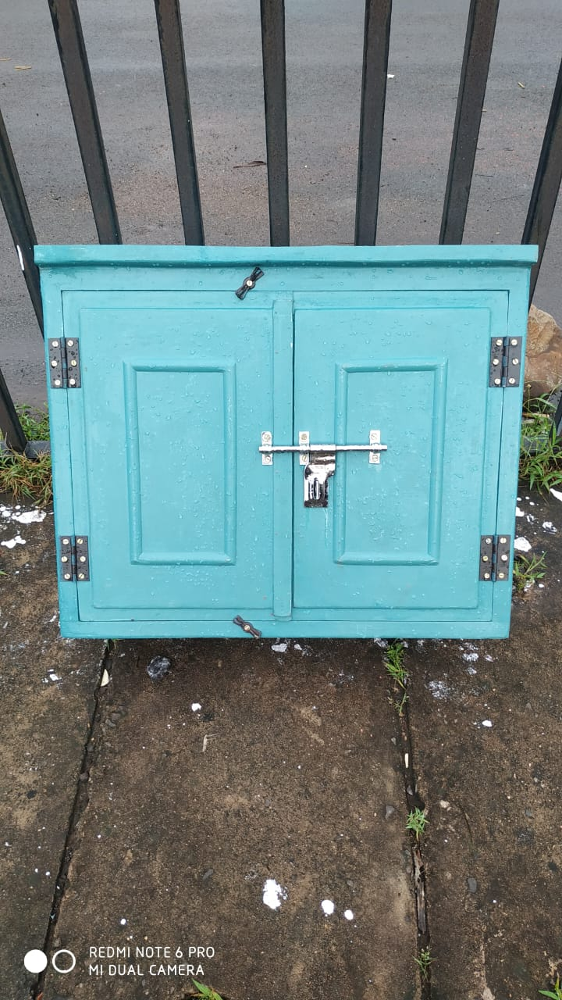

Our Product
 



Why This Is Spacial Product?
-
FRP Electrical Box – A Smart & Safe Choice for Farmers
-
The Problem with Metal Electrical Boxes
- Metal conducts electricity
- Water and moisture increase shock risk
- Rust and corrosion weaken the box
- Poor insulation leads to short circuits
-
Our Solution – FRP Electrical Box
-
99.9% Shock-Free Safety
- FRP is a non-conductive material
- It does not carry electric current
- Chances of electric shock are reduced by up to 99.9%
- Less risk while operating pumps
- Safer maintenance work
- Protection for workers and family members
-
99.9% Waterproof – Perfect for Outdoor Use
- Safe during heavy rain
- Suitable for irrigation areas
- No damage due to moisture
- Internal wiring stays protected
-
No Rust, No Corrosion, Long Life
- Rust damages the box
- Screws become weak
- Doors stop closing properly
- Safety reduces day by day
- No rust
- No corrosion
- No repainting required
- Very low maintenance
-
Strong, Durable & Farmer-Friendly Design
- Tough outer body
- Strong hinges and doors
- Easy to open and close
- Designed for rough usage
-
Ideal for Multiple Applications
- Agricultural pump panels
- Motor starters
- Tube well connections
- Farm electrical control units
- Outdoor electrical setups
- Rural and industrial use
-
A Small Change That Can Save Lives
- Prevent electric shock accidents
- Protect farmers and workers
- Reduce maintenance costs
- Increase long-term safety
In today’s time, electricity has become a basic need for farming. From water pumps and motors to lighting and control panels, electrical systems are used everywhere in agricultural fields. But along with electricity, safety has become a big concern, especially in rural and outdoor areas.
For many years, metal electrical boxes have been commonly used in farms. Unfortunately, these metal boxes have also become the reason for many serious accidents. During rain, moisture, or water leakage, metal boxes can easily carry electric current. Because of this, many farmers and workers have lost their lives due to electric shock.
Understanding this serious problem, we have developed a special FRP Electrical Box, designed especially for farmers and outdoor use. This product is created with one clear goal — maximum safety with long-term durability.
Metal electrical boxes may look strong, but in real outdoor conditions, they are risky.
In farming areas, water is everywhere — irrigation, rain, wet soil, humidity, and open fields. When water enters a metal box or touches its surface, the chances of electric shock increase dangerously. This is not just a technical issue, it is a life-threatening problem.
To solve this issue, we converted the traditional metal electrical box into a modern FRP Electrical Box. FRP stands for Fiber Reinforced Plastic, a material known for its non-conductive, waterproof, and heat-resistant properties. Unlike metal, FRP does not allow electricity to pass through the body. Even if there is moisture or water around, FRP remains electrically safe.
The biggest advantage of our FRP Electrical Box is safety.
This makes it a much safer option compared to metal boxes, especially in farms, pump houses, and outdoor electrical installations.
For farmers, this means:
Farming and water go hand in hand. That is why electrical equipment must be able to handle wet conditions.
Water cannot enter easily, and even if the surroundings are wet, the box continues to perform safely.
One of the biggest problems with metal boxes is rust.
Over time:
FRP completely solves this issue.
Once installed, the FRP Electrical Box works smoothly for years, saving money and effort.
Our FRP Electrical Box is not only safe but also strong and durable.
It is made keeping farmers’ daily work in mind. Simple design, solid structure, and practical size make it easy to install and use.
This FRP Electrical Box is perfect for:
Anywhere safety and durability are required, this box performs perfectly.
Switching from a metal electrical box to an FRP Electrical Box may seem like a small decision, but it can make a huge difference.
For us, this product is not just about business. It is about protecting lives and creating a safer farming environment.
Why Choose Our FRP Electrical Box?
- 99.9% shock-free safety
- 99.9% waterproof
- No rust, no corrosion
- Long life & low maintenance
- Specially designed for farmers
Because Farmers Deserve Safety First
Electricity should help farming, not endanger lives.With our FRP Electrical Box, we are taking one small but important step toward safer agriculture.
Strong. Safe. Reliable.This is not just an electrical box — it is protection for farmers.